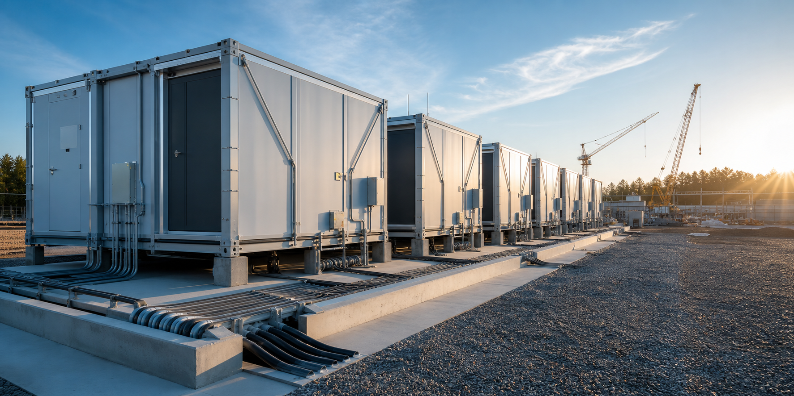

How Modular Deployment Reduces Site Risk

Speed is the most visible advantage of modular infrastructure, but it is not the only one. Moving repeatable construction into a controlled manufacturing environment also reduces the number of variables that have to be managed on site.
Less Field Work, Fewer Unknowns
Traditional construction brings multiple trades, material deliveries, temporary conditions, and changing weather into the same work area. Every interface adds schedule and safety risk. Factory-built modules arrive with major systems already assembled, inspected, and documented, leaving a more focused installation scope in the field.
Parallel Work Changes the Schedule
Site preparation and module production can happen at the same time. Foundations, utility work, access, and interconnection progress while the enclosure, distribution, and cooling systems are built off-site. This reduces the dependency chain that makes conventional projects vulnerable to a delay in one trade.
Repeatability Improves Quality
A controlled production line supports standard work, consistent tooling, and inspection at defined hold points. Lessons from one module can be applied to the next without reinventing the installation process. That repeatability matters when a deployment grows from a small initial phase into a multi-module campus.
The Site Still Needs a Complete Plan
Modular does not mean plug-and-play without preparation. Civil tolerances, lifting plans, grounding, utility interfaces, protection settings, and commissioning all need to be coordinated. The benefit comes from defining those interfaces early and reducing the amount of custom work performed under field conditions.
The Bottom Line
Modular delivery makes deployment more predictable by shifting complex work into a repeatable environment and simplifying the final site scope. The result is not just a faster build, but a clearer path to quality, safety, and scalable capacity.